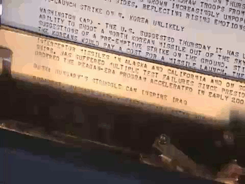

[ demos/ansi/all.sh ]
(links to these on final slide)
(15 mins?)
[ demos/sgr/cmd.sh ]
[ demos/interact/cmd.sh ]
[ PLAY AROUND: demos/interact/tmux.sh ]
For more commands tput can understand, look at terminfo(5), the section on string capabilities.
|
|
[ demos/ctrls/cmd.sh ]
30 mins?
[ demos/pjobs/cmd.sh ]
[ demos/stty/cmd.sh ]
Browse the stty(1) manual for info on cr/nl stuff, and flow control xon/xoff.
stty < terminal file # to configure a different terminal than the one we're running on.
|  |
|
Unix uses NL alone for line endings, but the terminal still interprets the original meanings exactly as for line printers. So how do things still work? Why does the cursor still return to the beginning of the line for NL alone?
[ demos/man/cmd.sh ]
Ever wonder why ASCII has characters like back-tick (`), circumflex (^), and the tilde (~)?
Excerpt from ECMA 6 (ASCII):
| bsdutils (script/scriptreplay) | (no site; install package for your OS) |
| nethack (terminal RPG) | http://www.nethack.org/ |
| ncurses (tput, infocmp, terminfo | http://www.gnu.org/software/ncurses/) |
| promptjobs | http://micah.cowan.name/projects/promptjobs/ |
| s5 - HTML slideshows | http://meyerweb.com/eric/tools/s5/ |
| screen | http://www.gnu.org/software/screen/ |
| teseq | http://www.gnu.org/software/teseq/ |
| tmux | http://sourceforge.net/projects/tmux/ |
| vim | http://www.vim.org/ |
| Nyan Cat | http://miku.acm.uiuc.edu/ |
| Star Wars | telnet towel.blinkenlights.nl |
(Freely available!)
| Xterm control sequences | http://invisible-island.net/xterm/ctlseqs/ctlseqs.html |
| ASCII / ISO-646 | http://www.ecma-international.org/publications/standards/ECMA-006.HTM |
| Control sequences for changing character sets (ISO 2022) | http://www.ecma-international.org/publications/standards/ECMA-035.HTM |
| “ANSI” control sequences | http://www.ecma-international.org/publications/standards/ECMA-048.HTM |